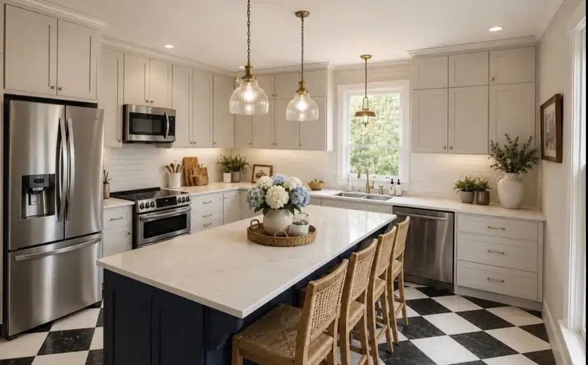

Kitchen Mockups
The original AI inspiration image, and to-scale 3D renders built from the cabinet maker's drawings and photos of the actual room. Tap an image to enlarge.
Inspiration (AI-generated)

To-scale renders
Rendered live in your browser from the same measurements. Cabinets, appliances, island and pendant positions follow the cabinet drawings and product specs; room depth (~15½ ft) and door/window positions are estimated from photos. Finishes are simplified.
Explore in 3D
Drag to look around, pinch or scroll to zoom.